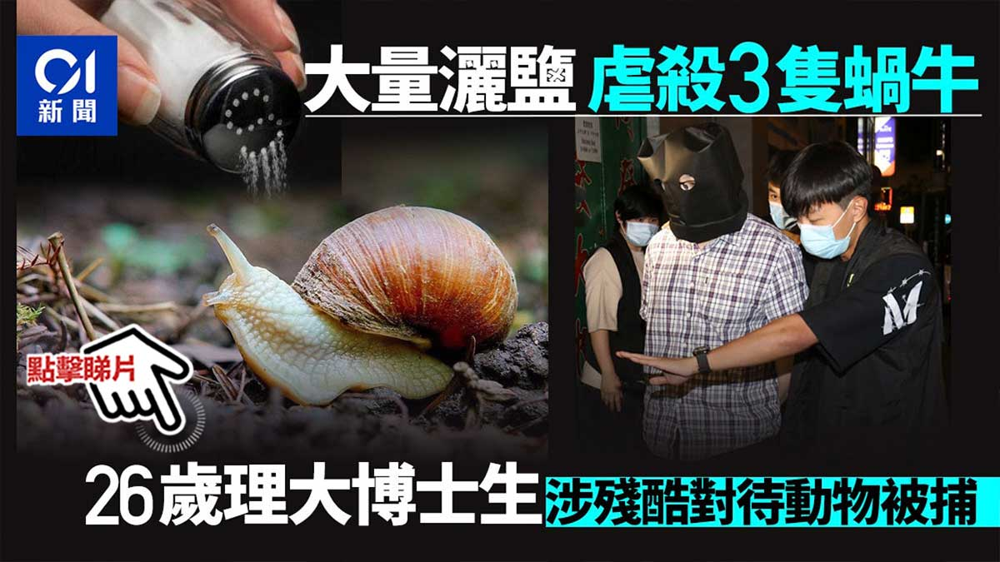

這個男子後續被捕後獲准保釋候查，也沒被正式起訴、開庭審理或被判有罪。
香港《防止殘酷對待動物條例》最早於1935年制定，是香港保護動物的核心法律之一，其目的在於禁止任何使動物承受「不必要痛苦」的行為，這個動物的類別包括了哺乳動物、鳥類、爬蟲類、兩棲類、魚類、任何其他脊椎動物或無脊椎動物，不論是野生還是馴養都受保護，因此蝸牛、昆蟲等無脊椎動物也可能落入條例適用範圍
雖然警隊的處理方式是有爭議的（例如將嫌疑人蒙頭帶走），但香港法律界對此指出的一個要點是，《防止殘酷對待動物條例》的重點並不是禁止殺死動物，而是禁止故意令動物承受不必要的痛苦
最後提一嘴，在大陸通過類似的法律對於寵物行業與畜牧業能達成規範，我也不知道這種事情為啥要有人覺得是壞事👋
香港《防止殘酷對待動物條例》最早於1935年制定，是香港保護動物的核心法律之一，其目的在於禁止任何使動物承受「不必要痛苦」的行為，這個動物的類別包括了哺乳動物、鳥類、爬蟲類、兩棲類、魚類、任何其他脊椎動物或無脊椎動物，不論是野生還是馴養都受保護，因此蝸牛、昆蟲等無脊椎動物也可能落入條例適用範圍
雖然警隊的處理方式是有爭議的（例如將嫌疑人蒙頭帶走），但香港法律界對此指出的一個要點是，《防止殘酷對待動物條例》的重點並不是禁止殺死動物，而是禁止故意令動物承受不必要的痛苦
最後提一嘴，在大陸通過類似的法律對於寵物行業與畜牧業能達成規範，我也不知道這種事情為啥要有人覺得是壞事👋
